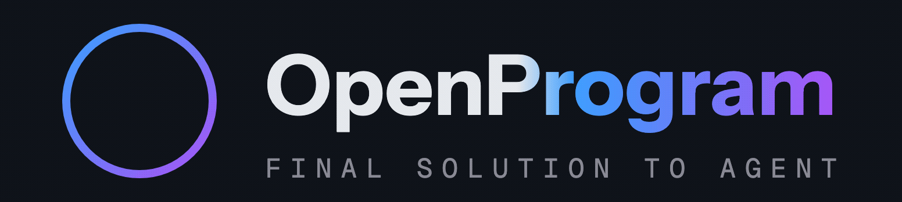
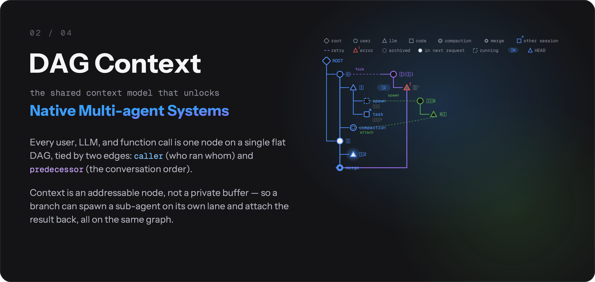
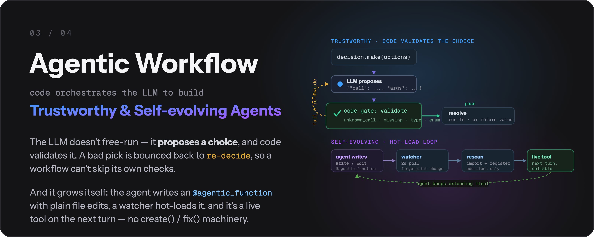
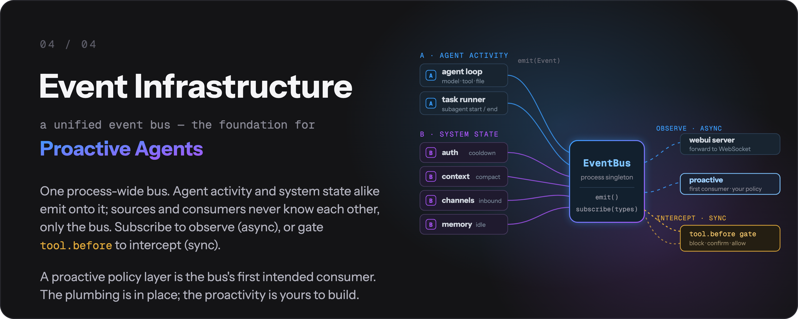
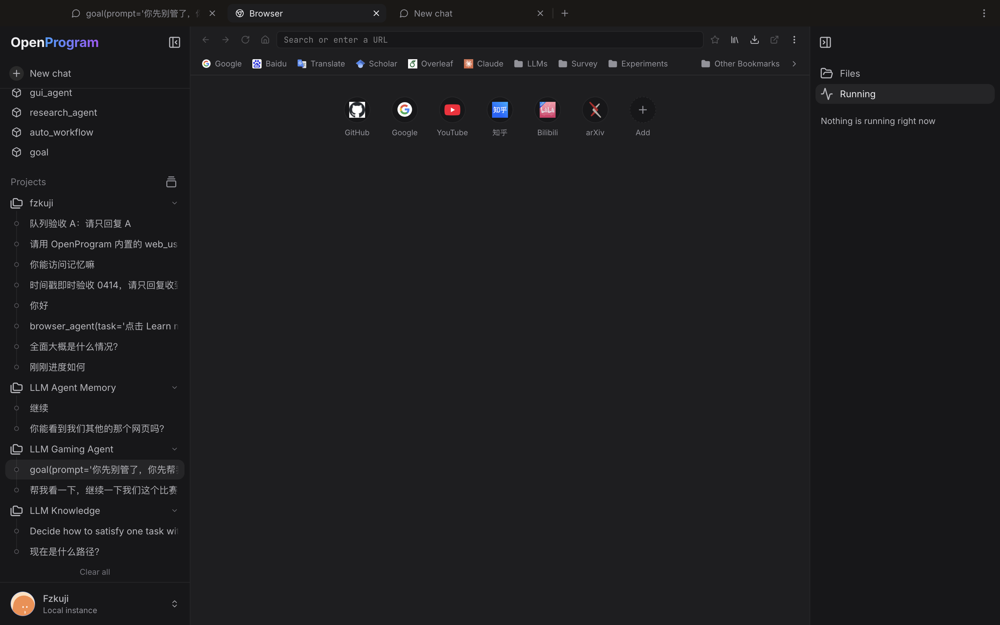

OpenProgram Docs
OpenProgram Docs

开源通用 Agent Harness —— 用 Python 搭建你的工作流。
任意 LLM · 任意平台


快速上手 · API 参考 · 设计哲学 · English
"The more constraints one imposes, the more one frees oneself." —— Igor Stravinsky，《Poetics of Music》
我们提出 Agentic Programming。 LLM 灵活,代码确定。让模型掌控一切,得到的是混乱——不可预测的执行、上下文爆炸、没有输出保证;把一切硬编码,又丢掉了智能。Harness 在两者之间取得平衡,逐时逐刻地交织——想固定的流程交给 Python,写不进脚本的判断交给 LLM。(完整论证 →)
🎉 论文: LLM-as-Code: Agentic Programming for Agent Harness —— 已被 KDD 2026 Workshop on Agentic Software Engineering (AgenticSE) 接收。
它有什么不同#
多平台、多 provider、多渠道——这些是标配,OpenProgram 都有(macOS / Linux / Windows,任意 LLM,终端 / 浏览器 / 聊天渠道)。真正让它不同的,是 harness 本体里的三个机制——每一个都是一类 agent 的地基,你可以在上面继续搭。
① DAG 上下文 —— 原生多 agent 系统的地基#

每个用户轮次、LLM 调用、函数调用都是同一张扁平 DAG 上的一个节点。两种边赋予它含义:caller(谁调了谁)和 reads(谁的输出喂进了这次 prompt)——上下文由图组装出来,不靠手工缝合。每个 @agentic_function 都是一行声明的可编程上下文:expose 控制一次调用向父级展示什么,render_range 控制一次调用拉进多少历史({"callers": 0} 给出一次性的自隔离草稿上下文,函数返回即回收——prompt 不会无界增长)。
因为上下文是可寻址的节点而不是每个 agent 一份的缓冲区,多 agent 不再是外挂:fork 一个分支、spawn 一个干净的子 agent、跨会话 send_message、把动文件的分支放进隔离的 git worktree 里跑——在同一张 DAG 上,每一样都只是"选一组不同的节点当上下文"。
② Agentic 工作流 —— 可信且自我演化的 agent 的地基#

Python 驱动流程;LLM 只在被要求时推理。 关键步骤变成代码关卡——模型的选择由代码解析和校验,校验不过就让它重新决策,而不是悄悄跳过,所以校验不可能被绕开。每次调用都是可重试、可观测的 DAG 节点。这就是执行可信的来源:保证写在代码里,不写在模型的善意里。
自我演化是一套机制,不是黑箱:agent 用普通文件编辑工具编写和修复自己的 @agentic_function,文件监听器热加载,新工具下一轮就上线——没有专门的 create() / fix() 机构。
③ 事件基础设施 —— 主动 agent 的地基#

一条进程级事件总线是一切之下的基底:agent 循环、auth、上下文、渠道、记忆都往上面发事件,任何组件都能按事件类型订阅(每个事件都是统一的 Event(type, payload, ts) 信封,带 id / origin / metadata)。这里刻意只做地基——监视事件流并主动行动的策略层,是这条总线的第一个预期消费者。管线已经就位;主动性留给你在上面搭。
快速开始#
1. 安装#
macOS / Linux:
curl -fsSL https://raw.githubusercontent.com/Fzkuji/OpenProgram/main/scripts/install.sh | bash
Windows(PowerShell):
iwr -useb https://raw.githubusercontent.com/Fzkuji/OpenProgram/main/scripts/install.ps1 | iex
更多选项——参数、无人值守 / AI agent 安装、从 checkout 安装:install.md。
2. 运行#
openprogram
首次运行会先配置 provider,然后问你打开哪个界面。跳过询问可以直接 openprogram tui(终端)或 openprogram web(浏览器 → http://localhost:18100)。
3. 添加 harness#
Harness 是 openprogram/functions/agentics/ 下的程序。使用 openprogram programs install <名称或Git来源> 安装：该命令会克隆或检查仓库、登记owner批准的来源，并在下次worker重启后启用它。只把目录复制到这里不会触发导入。
| Harness | 安装 | 功能 |
|---|---|---|
| GUI Agent | openprogram programs install gui(会拉 PyTorch),再跑它的安装器装检测器/OCR 资产——指南 |
通过视觉操控桌面应用和 OSWorld 虚拟机。 |
| Research Agent | openprogram programs install research |
文献调研 → 实验 → 论文初稿。 |
| Wiki Agent | openprogram programs install wiki |
把笔记 / 文档 / 聊天整理成带 [[wikilinks]] 的 Obsidian 知识库。 |
| 任意第三方 harness | openprogram programs install <owner>/<repo>(或完整 git URL) |
同一套流程——克隆、依赖、契约检查和owner来源登记。 |
写一个自己的可安装 harness 只差一份布局契约——完整指南(安装、管理、编写、测试、发布)见 installing-harnesses.md。
需要一条自己的工作流?直接在聊天里让 agent 做——内置的
agentic-programmingskill 会处理其余一切。
排障#
两条诊断命令覆盖大多数"坏了但不知道为什么"的情况:
openprogram rescue # 12 项跨平台探测,每项附修复命令
openprogram doctor # 快速检查安装是否健康
openprogram logs tail # 实时跟踪 worker 日志
openprogram providers doctor # OAuth token——要过期了?刷新接好了吗?
出问题先找 rescue——它不依赖 LLM 可达,逐项检查 provider 配置、端口、依赖、构建产物,并打印修复每一项的确切命令。逐案文档见 troubleshooting.md。
平台构建者话题(Runtime 重试语义、完整的 @agentic_function 装饰器 API、扁平 DAG 上下文模型)见 API.md 和 reference/api/ 下的分主题页面。
高级命令#
openprogram logs list # 全部日志文件,带大小和时间
openprogram logs tail worker -f # 跟踪 worker.log
openprogram completion bash # 自动补全:bash | zsh | powershell
openprogram secrets list # 等价 `providers list`(openclaw 风格别名)
openprogram providers use <prov> [profile] # 选择 provider 当前跑哪个账号
openprogram providers login <prov> --account work # 添加第二个账号
openprogram worker status # 后端起了吗?在哪个端口?
openprogram --print --resume <id> # headless 接着之前的聊天继续
Provider 与模型在 Settings → Providers(Web UI)里管理。每个 provider 支持多账号,一个凭据池里可放多个 API key——key 自动轮询,被限流的自动冷却。内置列表里没有的 provider?添加自定义 Provider 只需要名称和 Base URL(id 自动生成),适用于任何 OpenAI 兼容端点;模型可从该 provider 的 /models 端点浏览,也可按 id 手动添加,多 key 管理与内置 provider 相同。
怎么用#
日常两种交互方式——同一个后端、同一批会话,随时切换。
Web UI —— openprogram web#
打开 http://localhost:18100。全量界面:右栏是会话的实时 mini-DAG,任意节点上可 branch / merge / attach,多 agent 行按生产者打标,支持拖拽附件。适合想看着并引导执行树,或较长的、多分支的工作。

终端 UI —— openprogram#
同一个后端,不开浏览器——同样的命令、同样的聊天历史。按操作系统选原生渲染器:macOS / Linux 用 Ink,Windows 用 Rich。适合留在终端或走 SSH。一次性、无 UI:openprogram --print "…"。

会话存在
~/.openprogram/,两边共享——终端里开始,浏览器标签页里接着,反之亦然。
CLI 用法#
聊天 UI 之外,openprogram 命令可以 headless 跑——写脚本、接管道、做自动化。
# 一次性:发 prompt、打印答案、退出(可重定向或接管道)
openprogram --print "summarise CHANGELOG.md" > summary.md
# 用 key=value 参数运行指定 agentic function
openprogram programs run research --arg topic="state-space models"
# 按 id 继续早前的会话(headless,配合 --print 使用)
openprogram --print --resume local_d9a16a6b06 "and now?"
与 UI 同一套后端和会话(~/.openprogram/)——--print 的一次运行或恢复的会话同样出现在 web / 终端 UI 里。
功能详情#
| 功能 | 一句话总结 |
|---|---|
| 自动上下文 | 每次 @agentic_function 调用是一个树节点;runtime 把它穿进嵌套的 LLM 调用——不用手工拼 prompt。 |
| Deep work | deep_work(task, level) 跑自主的计划 → 执行 → 评估 → 修订循环,直到输出达到选定的质量档。状态持久化到磁盘。 |
| 函数编写函数 | 新建 / 修复 @agentic_function 由 agent 自己用普通文件编辑工具完成,遵循 agentic-programming skill。没有专门的 create() / fix() 调用。 |
| 对话即 git DAG | 会话是 commit + 分支 + 合并,右侧栏暴露这些操作。动文件的分支在隔离的 git worktree 里跑。 |
| 自己写自己的记忆 | ~/.openprogram/memory/下的Markdown:core.md(常驻注入)、topics/(一个主题一个文件,每个段落标注出处)、sources/(出处指向的对话原文)。对话在后台被折进主题文件,每次写入要么整体落地要么完全不落地。 |
| Mini-DAG 执行视图 | 右栏画出活动会话的每个节点和边,随聊天滚动。 |
| 多 agent + 多渠道 | 每一行都标注生产它的 agent;渠道层接入外部通道(Telegram、Discord、Slack、微信)。 |
每一项的详细导览——代码示例、设计理由、去代码库哪里看——在 features.md。
集成#
| 指南 | 描述 |
|---|---|
| Getting Started | 3 分钟上手及可运行示例 |
| Claude Code | 通过 Claude Code CLI 使用,无需 API key |
| OpenClaw | 作为 OpenClaw skill 使用 |
| API Reference | 完整 API 文档 |
项目结构
openprogram/
├── __init__.py # agentic_function 再导出
├── cli.py # `openprogram` 命令入口
├── agentic_programming/ # 引擎 — 范式必需的原语
│ ├── function.py # @agentic_function 装饰器
│ ├── runtime.py # Runtime（exec + retry + DAG 上下文）
│ ├── session.py # 会话生命周期
│ └── skills.py # SKILL.md 发现
├── context/ # 扁平 DAG 上下文模型 — nodes, storage, render, compute_reads
├── providers/ # Anthropic、OpenAI、Gemini、Claude Code、Codex、Gemini CLI
├── functions/
│ ├── _registry.py # tools + agentic functions 的统一注册表
│ ├── tools/ # @function 叶子工具 — bash、read、edit、grep、semble_search、web_search 等
│ └── agentics/ # @agentic_function 模块（每个一个目录，代码写在 __init__.py）
│ ├── ask_user/ # 向用户提澄清问题
│ ├── deep_work/ # 自主计划-执行-评估循环
│ ├── extract_pdf_figures/ # PDF 图表抽取
│ ├── … # 其它 agentics …
│ ├── GUI-Agent-Harness/ # GUI agent（独立仓库，克隆进来）
│ ├── Research-Agent-Harness/ # 研究 agent（独立仓库，克隆进来）
│ └── Wiki-Agent-Harness/ # Wiki agent（独立仓库，克隆进来）
└── webui/ # `openprogram web` — 浏览器 UI
skills/ # 用于 agent 集成的 SKILL.md 文件
examples/ # 可运行的示例
tests/ # pytest 测试套件
贡献#
这是一个范式提案,附带参考实现。欢迎讨论、其他语言的替代实现、验证或挑战此方法的用例,以及 bug 报告。
详见 CONTRIBUTING.md。
致谢#
OpenProgram 站在前人的肩膀上。工具框架、provider 抽象和若干工具实现移植或改编自下列项目——各自遵循其原许可证。非常感谢这些作者。
- OpenClaw(MIT)—— 工具注册表的布局
(
name / description / parameters / execute)、带check_fn+requires_env门禁的 provider 抽象、TOOLSETS预设、经 SKILL.md frontmatter + 延迟绑定read的 skill 加载。完整克隆放在references/openclaw/(已 gitignore)供浏览。 - hermes-agent
(MIT)——
execute_code的起点(我们裁掉了 Docker / Modal 层)、mixture_of_agents,以及多 provider 的web_search/image_generate/image_analyze工具的整体形态。 - pi-coding-agent
(MIT)—— 经 OpenClaw 引入的规范 AgentSkill 形态
(
<available_skills>XML 格式器,name / description / location)。 - Claude Code ——
DEFAULT_TOOLS集合的整体人机工学(bash + read / write / edit + glob / grep / list- apply_patch + todo 规划板)以及 todo 工具的 JSON schema。
- Anthropic / OpenAI / Google SDK —— provider 的 HTTP 契约;我们的 provider 直接调原生 HTTP API,让 SDK 依赖保持可选。
血缘更具体的工具文件在文件级 docstring 里各自注明了直接灵感来源。这些 MIT 许可的组件保留其原 MIT 条款;组合作品整体以 AGPL-3.0 分发。
引用#
在你的工作中使用了 OpenProgram,或基于这份代码构建?请引用我们的论文——并注意在 AGPL 下,任何你分发或作为联网服务运行的衍生作品必须同样以 AGPL 开源,并保留署名(见许可证)。
LLM-as-Code: Agentic Programming for Agent Harness —— 已被 KDD 2026 Workshop on Agentic Software Engineering (AgenticSE) 接收。arXiv:2606.15874
@inproceedings{qi2026llmascode,
title = {LLM-as-Code: Agentic Programming for Agent Harness},
author = {Qi, Junjia and Fu, Zichuan and Gao, Jingtong and Zhang, Wenlin and Yan, Hanyu and Wu, Xian and Zhao, Xiangyu},
booktitle = {KDD 2026 Workshop on Agentic Software Engineering (AgenticSE)},
year = {2026},
eprint = {2606.15874},
archivePrefix = {arXiv},
url = {https://arxiv.org/abs/2606.15874},
}
许可证#
AGPL-3.0 © 2026 Fzkuji。可自由使用、研究、修改、分享——但任何你分发或作为联网服务运行的衍生作品也必须以 AGPL 发布,并保留署名。